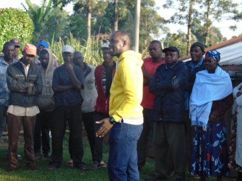

MCA Aspirant, Busali Ward | 2027
Leadership • Integrity • Development
"Busali First. Together We Build Our Future."
A dedicated community leader committed to transforming Busali Ward
Steve Ano is a lifelong Busali resident with over 10+ years of experience working directly with communities, youth programs, farmer cooperatives, and small business development initiatives.
His proven track record includes leading successful skill-training programs, managing agricultural cooperatives, and spearheading community infrastructure projects that have directly improved the lives of thousands of residents.
Steve believes that good governance starts with listening. He walks with the people, understands their challenges, and delivers real solutions—not empty promises.

Five Pillars for Busali's Future
Expanding quality education access, vocational training programs, and youth employment initiatives to unlock the potential of Busali's next generation.
Supporting farmers with modern techniques, cooperative strengthening, fair market access, and climate-smart agricultural practices.
Developing roads, water systems, electricity access, and public facilities that serve all residents and enable business growth.
Ensuring access to affordable healthcare, maternal services, mental health support, and nutrition programs for all families.
Building transparent governance, fostering youth leadership, supporting women entrepreneurs, and strengthening community participation.
Real work, real results, real impact
Launched a digital literacy and vocational training center that has equipped over 500 youth with marketable skills in tech, agriculture, and entrepreneurship.
Established and strengthened 12 agricultural cooperatives, helping 800+ farmers improve yields through modern techniques and collective marketing.
Championed the installation of 15 water points across remote areas, providing clean water access to 3,500+ residents, particularly women and children.
Mobilized resources to support 200+ women-led businesses through microfinance, mentorship, and market linkages, creating sustainable livelihoods.
Led rehabilitation of 25km of community roads, improving access to markets, schools, and health facilities for over 5,000 families.
Organized quarterly mobile health clinics providing free medical services, immunizations, and health education to underserved communities.
What residents say about Steve Ano's leadership
"Steve helped me access market linkages for my farm produce. My income tripled in one year. He's not just a politician—he's a real partner in our success."
"The skills hub Steve established changed my life. I learned web design, got a job, and now I'm mentoring other youth. This is what community investment looks like."
"Steve listens. He doesn't make empty promises. The water project he led means my daughters no longer walk 5km daily. Real leader, real solutions."
Join the movement for Busali's transformation
We're building a grassroots movement for real change in Busali Ward. Whether you're a professional, student, farmer, business person, or community member, there's a role for you.
Have questions? Want to connect? Reach out to Team Ano
Busali Ward, Kakamega County, Kenya
Mon-Fri: 9AM - 5PM
Weekends: By appointment